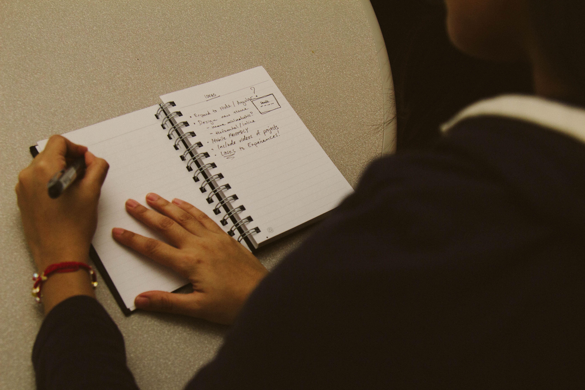
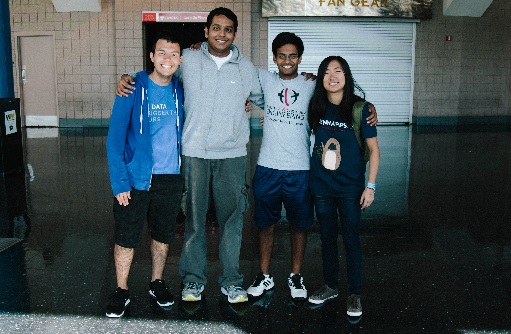
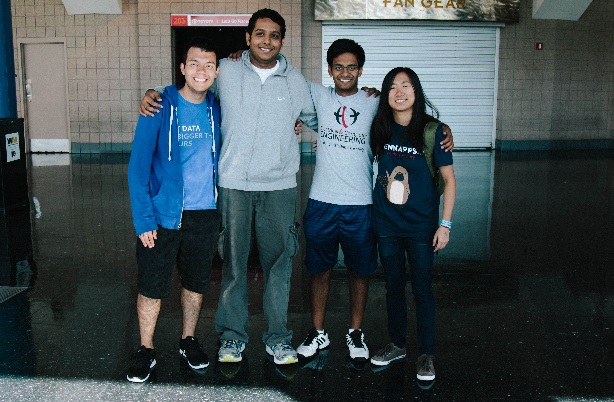

Coffee/Café
Coffee has built a cult following over the years.
And I have joined it.
I started drinking coffee as a rebel. When my mother told me that coffee stunted growth, I simply ignored her. And guess what mom? I am...
indeed short.
But honestly? I'm okay with that. I'm okay with making coffee between classes in the tight spaces of my dorm room, and I'm okay with spending those extra dollars every month for a new bag of beans. Coffee has simply become something that I've grown accustomed to in my everyday life.
It's more than just a commodity to consume. More than anything, I think I appreciate the places that serve coffee. I'm talking about those local coffeehouses (or even Starbucks) that play jazz in the background, and contain cool antiques that make you feel hipster. That ambiance of high-classness and sophistication that settles in without you consciously recognizing it. It's where I remember high school hang out sessions with my two close friends Julide and Josh. We'd sit down, order a drink, and simply reminisce about life. It was a place to meet, and a place to connect.
Tea
Often seen as a competitor, tea is equally as valuable to me as coffee. Both provide caffeination, both taste great, and both are a process to learn. I'm still quite a novice at making and understanding tea. I can name up to about four types before I start to seriously have to ponder what comes next (Green, Black, Oolong [only cause this one's fun to say], and Chai).
I can't tell you how refreshing a sip of freshly made tea tastes to me. It simply beats coffee in this manner by being an agent that not only awakes you, but also relaxes you.
Although I make coffee and drink it more often, I reserve tea for the weekends where I want to relax in my room for a reason: to savor the experience. It's more to me than something that I make in the morning to keep me going throughout the day. It's something you sit down for and slow down your busy schedule for. And all for what? A couple of sips.
That being said, teahouses also give off this culturally enlightened vibe. They're where you go to catch up with an old friend who you've always considered wise, or perhaps a place where you'd meet your professor to learn more about them as a person and all the knowledge that they've built over the years. It's where you'd expect to learn something about life.
My friend and I wanted to start a high school club at one time... The Enlightened ParTEA. Where philosophical and cultural conversations could be exchanged over various teas from around the world. Although we never went through with the organization, I'd like to give kudos to the younger versions of us for having that spirit.
Photography
I like going on adventures. I like capturing these adventures.
More pictures on my flickr.
THIS vs THIS
I'm not here to hate on any font. I beileve all fonts have some purpose somewhere. Times New Roman too boring for you? Well it's perfect for your academic paper. Comic Sans is a joke? Well joke books do indeed exist.
My interests in typography don't just span to aestheics. It's how these aesthetics impact the psychological behaviors of us. How do you react to reading this font versus the next? How does it look when you let the fonts breathe more with additional whitespace?
I find it fascinating that slight alterations in text can influence people in even the slightest ways. Would a heavier weight cause people to feel more urgency? What about the ever-so-slight raising of the x-height bar?
Text can be beautiful. Whether serif or sans-serif, they're all here to help us convey direct & indirect messages. When I look at 'Scala,' I think of sophisticated and creative thought. But why?
Last semester, I attended an HCI (Human Computer Interaction) seminar featuring author, designer, and curator Ellen Lupton. I'd have to say that her presentation really pivoted my interests of design and typography into the direction that it is going today.
I decided to buy her book Thinking with Type shortly after the lecture, and have been learning more about this field since then. I'd have to say that my interests in HCI and design really spawned from her talk and her book. So thank you Ms. Lupton.
Design
There are two aspects of design that I find really great. There's the part that people typically think about. "Does it look pretty?" And yes, that aspect of design is one that I strive to get better at. But more than that, design is about "Does it work?" It's the study of creating something that works.
I used to think that design majors were just people who created pretty looking models of the real world. But design is literally everywhere. It's in my major too. Computer and electrical engineers need to find the best design for their architectures. They need to know that the circuit boards that they just drew up will be both efficient and effective. In other terms, they need to find a suitable design.
The word design encompasses so many subjects, and yet it's simple and aesthetically pleasing. Whoever designed the word 'design' did a pretty darn good job. There's not much to say about this interest of mine until I start to build a better understanding of it in my later years, but as of right now, design is quite swell.
Hackathons / Code
Endless hours with these two cause me to feel frustrated, stressed, and often times hopeless. But for some darn reason, I have never had a thought of "this isn't for me" under these pressures. It's like a love/hate relationship that ultimately leads to me loving it. There's something so remarkable about building something out of nothing.
I got into electrical and computer engineering as a major mainly because I thought that learning about "how computers work" would be cool enough. But now to be able to understand how things work, and additionally be able to utilize those concepts to make something useful is ridiculously satisfying.
Hackathons are never a time where I dread a lack of sleep deprivation. It's a time where I can set aside a weekend to do nothing but focus on a particular project. It's great! Food, friends, and the ability to learn something new all packed into 24/36 hours. You feel a bit loopy towards the end of each hackathon, but that doesn't stop you from being AWESOME!
As for code, I don't think I have ever appreciated a language as much as I do with code. It's a universal language that allows you to tackle on problems and creatively think about solutions. At odd hours in the night when I'm frustrated with a problem, I only blame myself, never code. It's simply a flawless commodity that stretches across broad horizons.
 
